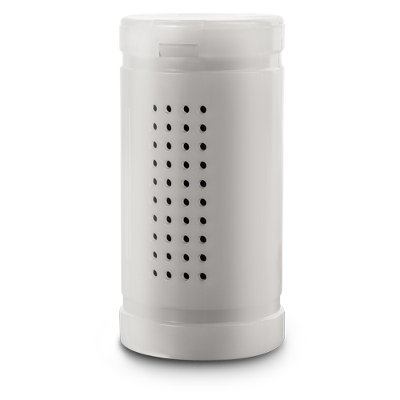

Фильтр активной стерилизации
Важное дополнение, повышающее эффективность работы воздухоочистителей A501 и A704.
Фильтр стерилизации воздуха содержит терпены — органические вещества, обладающие антибактериальными свойствами, растворяющие стенки клеток бактерий и разрушающие их структуру.
Фильтр активной стерилизации. Используются 100% натуральные эфирные масла сосны, кипариса.
Терпены — основной компонент смол и бальзамов, в больших количествах содержатся в хвойных растениях и эфирных маслах и являются главным ингредиентом фитонцидов.
Так же убивает комаров, мух и других паразитов. Деликатный аромат эфирных масел снимает стресс, позволяя почувствовать себя в хвойном лесу.
Фильтр предназначен для эффективной работы в воздухоочистителях A501и A704в течение 2 месяцев.